Tailor-Made
Personal, measured, yours alone.
+
Baju kurung, baju Melayu, kebaya, baju nikah and suits — made to your measurements for men and women.
Bespoke tailoring, alterations, batik and corporate uniforms — measured, cut and fitted by hand in our Shah Alam studio.
Book a fitting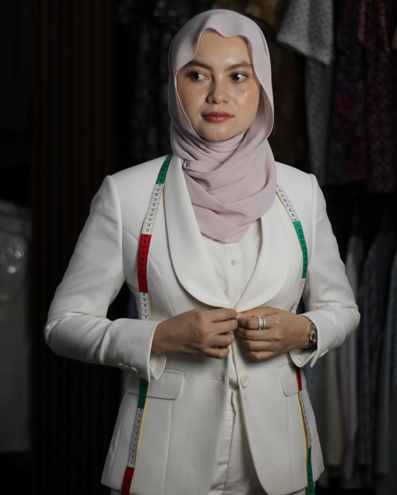
Waniey opened her studio in Shah Alam in 2018 with one simple idea. Too many clothes are cut to a size chart and never quite fit — tight across the shoulders, loose at the waist, too long in the sleeve. So at Waniey.J, every piece starts with your own measurements.
The first customers came for alterations. Many came back for baju Raya, then baju nikah, then matching outfits for the whole family.
Today the studio is a team of male and female tailors, so every client is measured by someone they're comfortable with. Waniey still takes many of the measurements herself, and talks through every cut and fabric before anything is sewn.
From a single bespoke piece to corporate uniforms and mass-production orders, the approach stays the same: every piece is fitted until it's right.
No two bodies are the same.
Neither are our patterns.
One piece or one hundred.
The same attention to every seam.
Personal, measured, yours alone.
Resized, repaired, refitted.
Heritage prints, modern cuts.
Consistent, durable, sharp.
No guesswork and no size charts. You see and try the piece before it's finished, and we adjust until it's right.
Visit the studio“Measuring physically and given good opinions and advice. Requested to try to fit again after completion altering. Very professional, thumbs up.”
A few pieces from the studio.
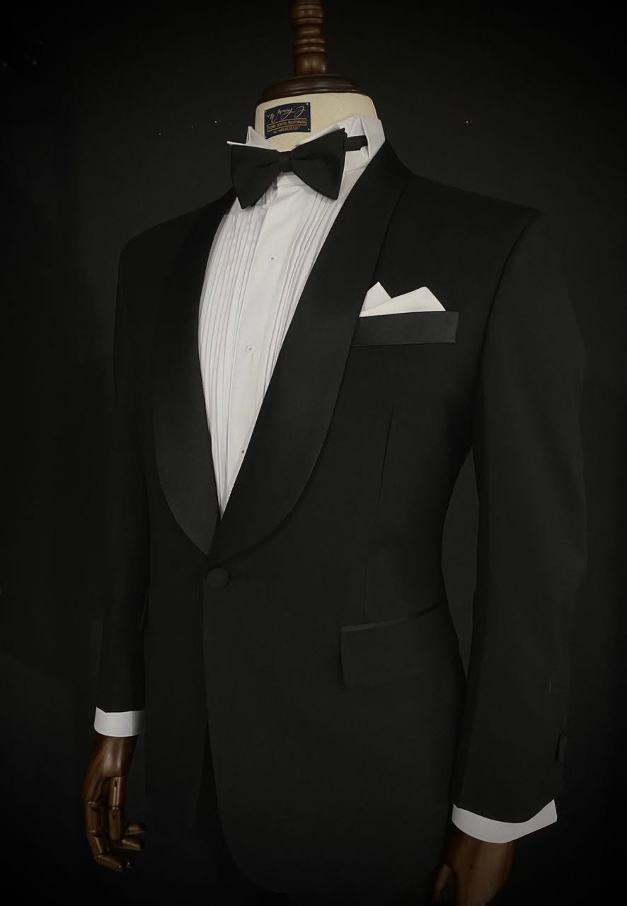
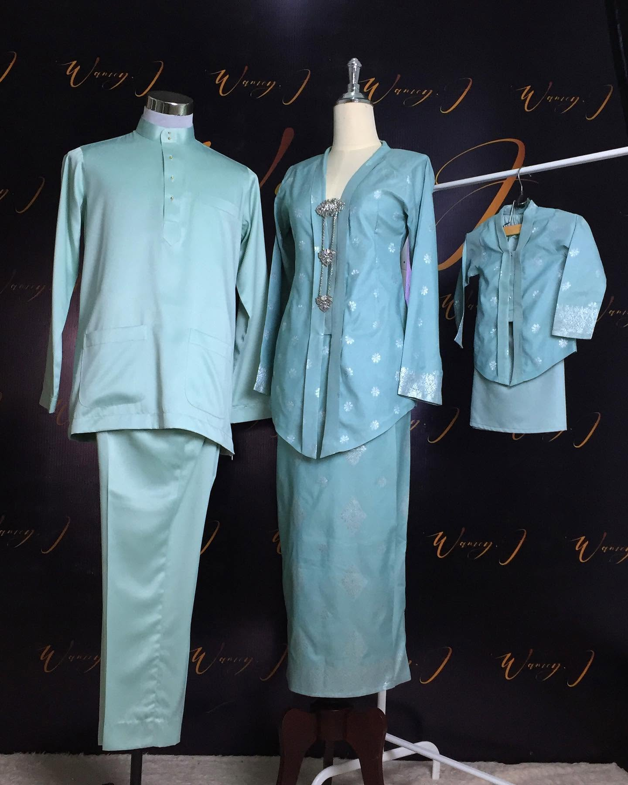
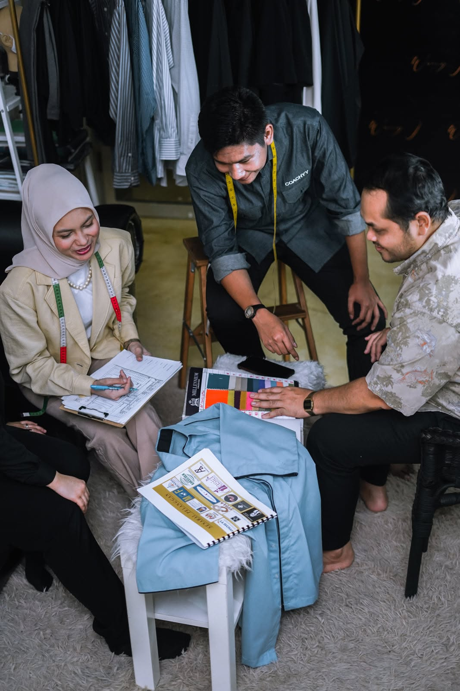
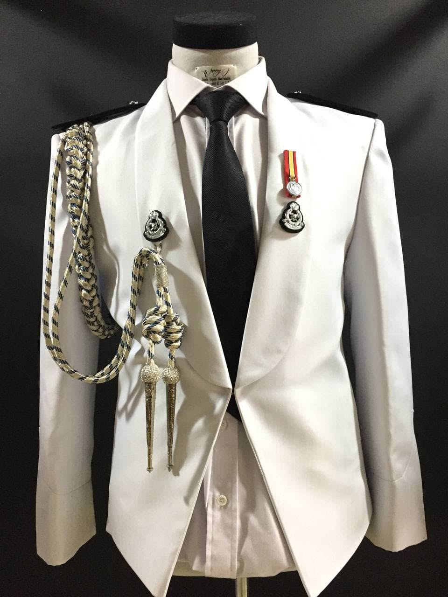
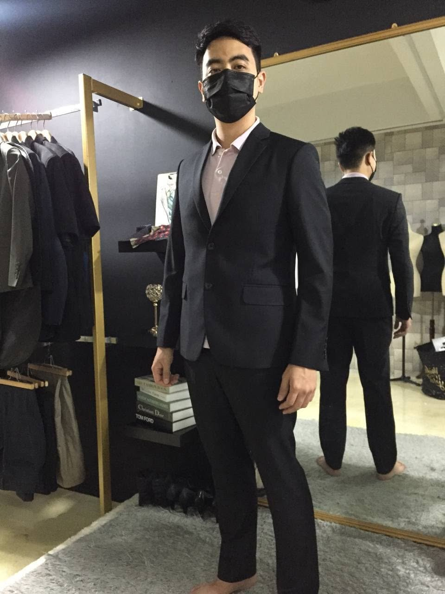
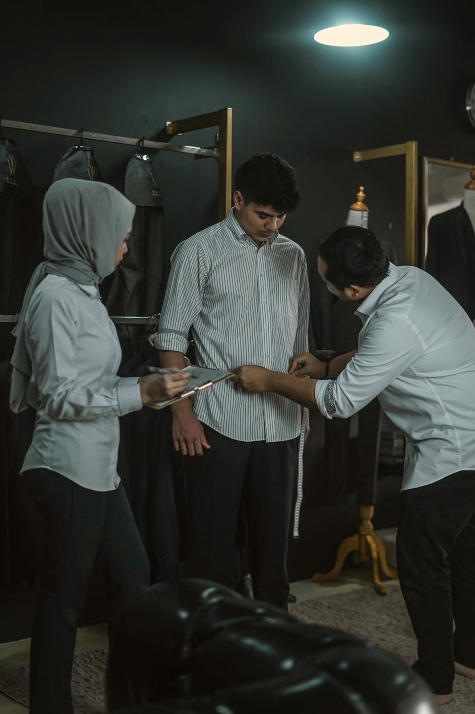
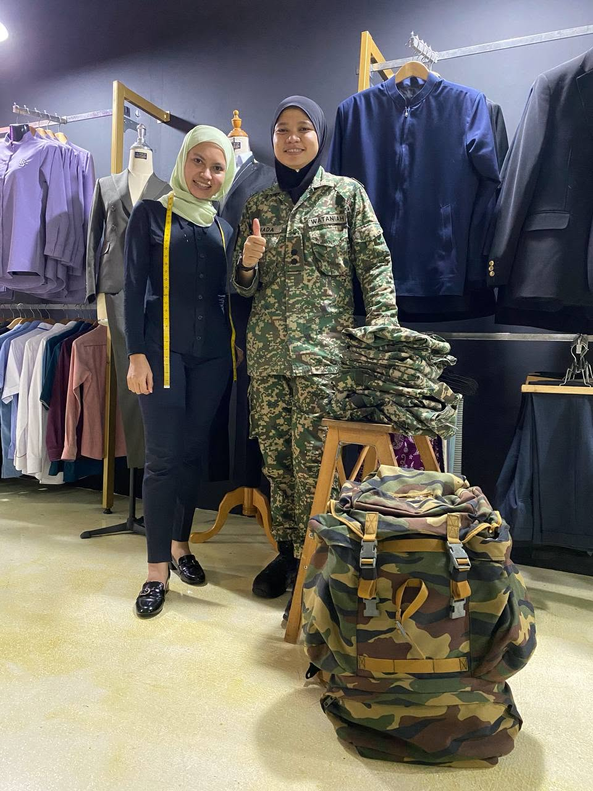
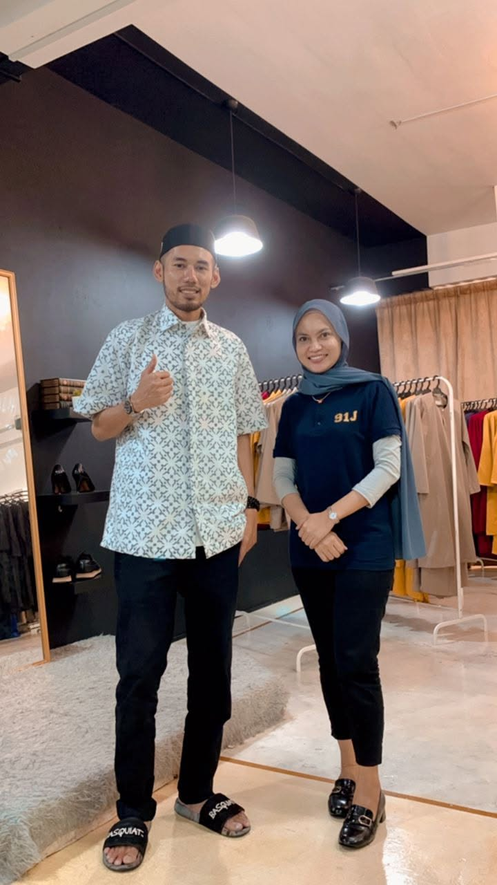
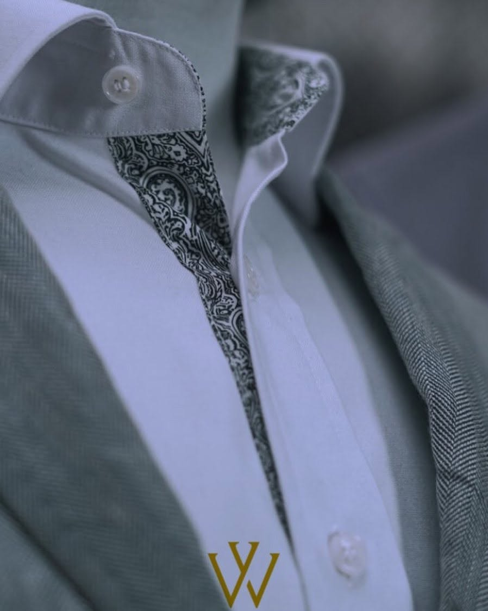
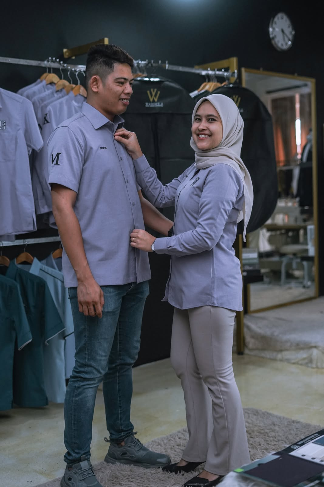
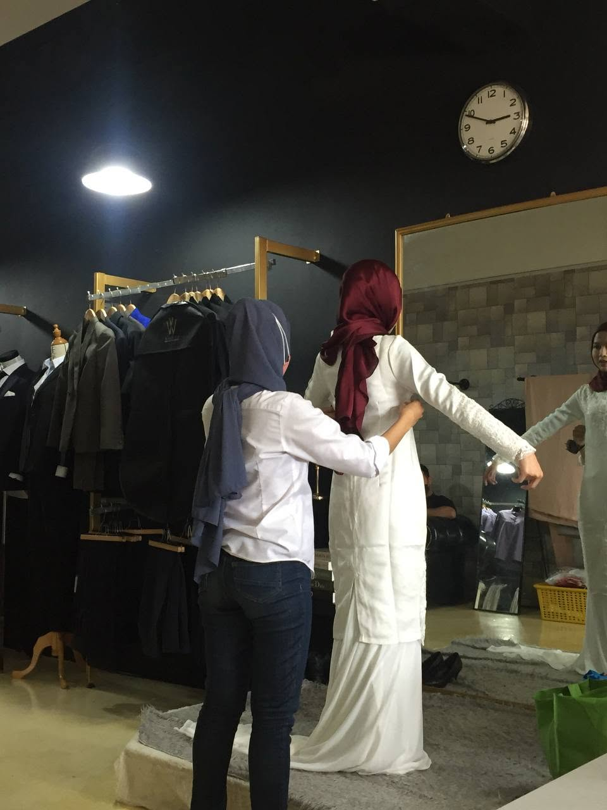
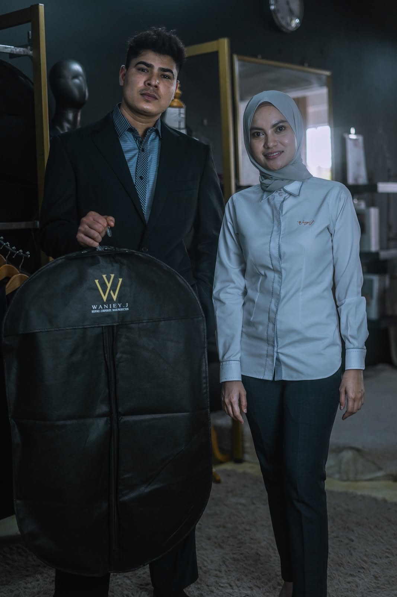
“Miss Waniey (the owner) personally measured and attend to my needs. She's very friendly and gives suggestions to make sure the end results are good (trust me they know better).”
“On the 3rd day after I requested their help, they have assisted finishing my new set of baju nikah. Was very happy with their craftmanship… as I'm a big size guy.”
“Staff is very friendly and experienced. Price is very reasonable and the stitches are very very neat.”
“Kedai alter & fashion terbaik di Shah Alam… kerja amat berkualiti, pantas, harga berpatutan dan sangat mesra pelanggan.”
The best alteration & fashion shop in Shah Alam — quality work, fast, fair prices, very customer-friendly.
“First time saya custom baju kurung modern dekat sini, alhamdulillah semua perfect. Jahitan pun sangat kemas.”
My first custom modern baju kurung here — everything perfect, and the stitching is very neat.
“Since I sent almost a dozen pairs of pants and clothes to be altered, they finished it expeditiously in one week.”
“Alhamdulillah sudah 3 kali datang ke sini untuk alteration dan tempah baju raya di WanieyJ Boutique, hasil kerja yang memuaskan, harga berpatutan, servis yang bagus dari staff. TERBAIKK!!!”
Third visit for alterations and Raya outfits — satisfying work, fair prices, great service from the staff. The best!
“Jahitan kemas and staff sangat friendly.. a lot of idea untuk cantikkan baju lagi.”
Neat stitching and very friendly staff — lots of ideas to make the outfit even nicer.
“Tailor memang padu, tahu apa yang diperlukan oleh customer. Tanya je, sebab tailor peramah dan mesra.”
Really solid tailors who know what customers need. Just ask — they're friendly and welcoming.
“Good service has provided to customer. Good quality, recommend to others to use service like this.”
Anything else? Message us on WhatsApp — we'll answer quickly.
Ask a questionNo — walk-ins are welcome for alterations. For a custom design or a bulk uniform order, booking a slot means we can give you our full attention.
Most alterations are ready within about a week, often sooner. Customers have had several pieces back in under five days. We'll give you a date when you drop off.
Often, yes. Tell us your date when you contact us and we'll be honest about what's possible.
We have both male and female tailors, and customers are attended to by staff of the same gender.
It depends on the fabric and the work involved. Send a photo of the piece or your idea on WhatsApp and we'll give you a quote before we start.
| Mon – Thu | 10:00 – 18:30 |
| Friday | Closed |
| Saturday | 10:00 – 18:30 |
| Sunday | 10:00 – 17:00 |
Free to ask · Quote before we start · Walk-ins welcome